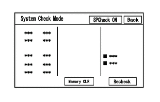
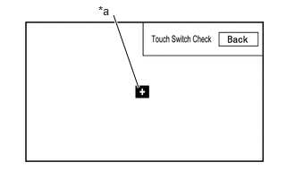
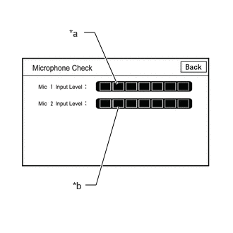
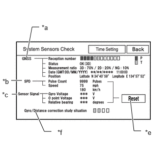
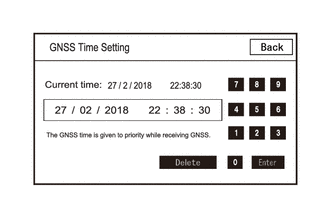
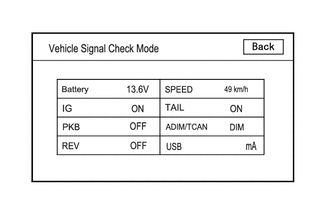
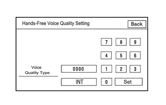
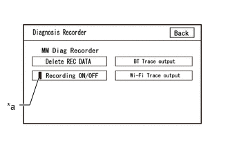

- Number of switches pushed at once is displayed.
- If 3 switches are pushed at once, "3" is displayed.
- If 4 or more switches are pushed at once, "More than 3" is displayed.
| Last Modified: 12-09-2025 | 6.11:8.1.0 | Doc ID: RM100000002GGNJ |
| Model Year Start: 2024 | Model: Tacoma | Prod Date Range: [12/2023 - 03/2024] |
| Title: AUDIO / VIDEO: AUDIO AND VISUAL SYSTEM: OPERATION CHECK; 2024 MY Tacoma Tacoma HV [12/2023 - 03/2024] | ||
OPERATION CHECK
CHECK NAVIGATION SYSTEM NORMAL CONDITION
(a) If the cause of a symptom is any of the following, the corresponding symptom is normal; it is not due to a malfunction.
|
Symptom |
Answer |
|---|---|
|
A longer route than expected is chosen. |
Depending on the road conditions, the radio and display receiver assembly may determine that a longer route is quicker. |
|
Even when distance priority is high, the shortest route is not shown. |
Some routes may not be advised due to safety concerns. |
|
When the vehicle is put into motion immediately after the engine starts, the navigation system deviates from the correct position. |
If the vehicle starts before the navigation system activates, the system may not react. |
|
When driving on certain types of roads, especially new roads, the vehicle position deviates from the correct position. |
When the vehicle is driving on new roads not available on the internal memory, the system attempts to match it to another nearby road, causing the position mark to deviate. |
|
Route guidance uses roads with congestion |
If the congestion is short, congested road avoidance will not be performed. |
|
Some specific areas of the map are not displayed |
Urban map areas without data will not be displayed. |
(b) The following symptoms are not malfunctions, but may occur due to margin of error in the GNSS, gyro sensor, speed sensor or navigation system.
(1) The current position mark may be displayed on a nearby parallel road.

(2) Immediately after a fork in the road, the current vehicle position mark may be displayed on the wrong road.

(3) When the vehicle turns right or left at an intersection, the current vehicle position mark may be displayed on a nearby parallel road.

(4) When the vehicle is carried, such as on a ferry, and the vehicle itself is not driving, the current vehicle position mark may be displayed in the position where the vehicle was until a measurement can be performed by the GNSS.

(5) When the vehicle travels on a steep hill, the current vehicle position mark may deviate from the correct position.

(6) When the vehicle makes a continuous turn (e.g. 360, 720, 1080 degrees), the current vehicle position mark may deviate from the correct position.

(7) When the vehicle moves erratically, such as constant lane changes, the current vehicle position mark may deviate from the correct position.

(8) When the ignition switch is turned to ACC or ON and the vehicle is turned on a turntable before parking, the current vehicle position mark may not indicate the correct direction. The same will occur when the vehicle comes out of the parking garage.

(9) When the vehicle travels on a snowy road or a mountain path with tire chains installed or using a spare tire, the current vehicle position mark may deviate from the correct position.

(10) When the tires are changed, the current vehicle position mark may deviate from the correct position.

HINT:
- A change in tire diameter may cause a speed sensor error.
- Performing "tire change" in calibration mode will allow the system to correct the current vehicle position faster.
HINT:
-
For information on how to start diagnosis and transition to each screen, refer to
![2024 - 2026 MY Tacoma Tacoma HV [12/2023 - ]; AUDIO / VIDEO: AUDIO AND VISUAL SYSTEM: DIAGNOSIS SYSTEM](../../../../stylegraphics/info.gif)
- This function can check the wire harness between the stereo component amplifier assembly and each speaker for malfunctions. (w/ "JBL" Sound System)
- This function can check the wire harness between the radio and display receiver assembly and each speaker for malfunctions. (w/o "JBL" Sound System)
CHECK SPEAKER
(a) Turn radio and display receiver assembly on and play any audio source.
HINT:
- This audio source will be used for the speaker check.
- The "SPCheck ON" button is grayed out and cannot be pressed when the audio source is off.
(b) Enter diagnostic mode.
(1) Start diagnosis and display the "Service Menu" screen.
(2) Select "Failure Diagnosis" on the "Service Menu" screen to display the failure diagnosis screen.
(3) Select "System Check" of the failure diagnosis screen to display the system check mode screen.
(c) Speaker check (w/o "JBL" Sound System)
(1) Select "SPCheck ON" from the "System Check Mode" screen.
(2) Check that each speaker outputs sound from the selected audio source properly.
HINT:
- "SPCheck OFF" is displayed during the speaker check.
- Sound can be heard from the speakers around the vehicle in order beginning from the speaker on the front side.
- The sounding order during speaker check cannot be adjusted.
- More than one speaker may sound simultaneously depending on the speaker wiring.
- If sound is not output from a speaker, check the wire harness between the radio and display receiver assembly and each speaker for a malfunction.
(3) Sound stops when any of the following conditions are met:
- "SPCheck OFF" is selected.
- Audio mode is turned off.
- The screen is changed to another screen.
- Diagnostic mode is turned off.
- The ignition switch is turned off.
(d) Speaker check (w/ "JBL" Sound System)
(1) Select "SPCheck ON" from the "System Check Mode" screen.
(2) Sound can be heard from the speakers around the vehicle in order beginning from the speaker on the front side.
HINT:
- "SPCheck OFF" is displayed during the speaker check.
- Sound can be heard from the speakers around the vehicle in order beginning from the speaker on the front side.
- The sounding order during speaker check cannot be adjusted.
- More than one speaker may sound simultaneously depending on the speaker wiring.
- If sound is not output from a speaker, check the wire harness between the stereo component amplifier assembly and each speaker for a malfunction.
(3) Sound stops when any of the following conditions are met:
- "SPCheck OFF" is selected.
- Audio mode is turned off.
- The screen is changed to another screen.
- Diagnostic mode is turned off.
- The ignition switch is turned off.
CHECK PANEL & STEERING SWITCH
HINT:
For enter diagnostic mode and screen transition, refer to
(a) Enter diagnostic mode.
(1) Enter diagnostic mode.
(2) Select "Failure Diagnosis" from the "Service Menu" screen.
(3) Select "Panel&Steering Switch" on the "Function Check/Setting I" screen to display the "Panel&Steering Switch Check Mode" screen.
(b) Panel & Steering Switch Check Mode
(1) Operate each switch and check that the switch conditions are correctly displayed.
Screen Description
|
Display |
Content |
|---|---|
|
*a: Switch condition |
"Pushed" is displayed when any switch is pushed. |
|
*b: Number of switches pushed |
|
|
*c: Rotary switch direction |
Direction of rotary switch is displayed. |
|
*d: Communication method |
The steering pad switch assembly method of communication is displayed. |
HINT:
- Do not push any switch for 3 seconds or more as doing so may cancel diagnostic mode.
- If the result of a switch check for the radio and display receiver assembly is abnormal, it can be suspected that the radio and display receiver assembly is malfunctioning.
-
If the result of a switch check for the steering pad switch assembly is abnormal, it is necessary to perform an inspection of the steering pad switch assembly and spiral cable sub-assembly.
Steering Pad Switch Assembly: Click here
Spiral Cable Sub-assembly: Click here
CHECK TOUCH SWITCH
HINT:
For enter diagnostic mode and screen transition, refer to
(a) Enter diagnostic mode.
(1) Enter diagnostic mode.
(2) Select "Function Check/Setting" from the "Service Menu" screen.
(3) Select "Touch Switch Check" on the "Function Check/Setting I" screen to display the "Touch Switch Check" screen.
(b) Touch Switch Check
|
*a |
"+" mark |
(1) Touch the display anywhere in the open area to perform the check when the "Touch Switch Check" screen is displayed.
OK:
A "+" mark is displayed where the display is touched.
HINT:
- The "+" mark remains on the display even after your finger is removed.
- If the result of the touch switch check is abnormal, it can be suspected that the radio and display receiver assembly is malfunctioning.
CHECK MICROPHONE
HINT:
For enter diagnostic mode and screen transition, refer to
(a) Enter diagnostic mode.
(1) Enter diagnostic mode.
(2) Select "Function Check/Setting" from the "Service Menu" screen.
(3) Select "Microphone Check" on the "Function Check/Setting I" screen to display the microphone check screen.
(b) Microphone Check
Screen Description
|
Display |
Content |
|---|---|
|
*a: Microphone 1 input level meter |
Displays the input level in 8 steps for microphone 1 |
|
*b: Microphone 2 input level meter |
Displays the input level in 8 steps for microphone 2 |
(1) Speak to the microphone and check that the microphone input level meter changes according to the input level.
HINT:
The microphone input level is updated every 0.1 seconds.
OK:
The microphone input level changes
HINT:
For enter diagnostic mode and screen transition, refer to
SYSTEM SENSOR CHECK
(a) Enter diagnostic mode.
(1) Enter diagnostic mode.
(2) Select "Function Check/Setting" from the "Service Menu" screen.
(3) Select "System Sensors Check" on the "Function Check/Setting I" screen to display the "System Sensors Check" screen.
(b) System Sensors Check
*a: GNSS
|
Display |
Content |
||
|---|---|---|---|
|
Reception number |
Displays reception condition of the satellites used to determine vehicle position |
Blue: P (In use) |
System is using GNSS signal for location. |
|
Yellow: T (Receiving) |
System is tracking GNSS signal for location. |
||
|
No color: Not in use |
|
||
|
Status |
Displays reception status of the satellites used to determine vehicle position |
OK (3D) |
3-dimensional location method is being used. |
|
OK (2D) |
2-dimensional location method is being used. |
||
|
NG |
Location data cannot be used. |
||
|
error |
Reception error has occurred. |
||
|
- |
Any other state. |
||
|
Measurement ratio |
Displays the ratio of satellites performing measurements |
3D |
The ratio of satellites performing 3D positioning is displayed. |
|
2D |
The ratio of satellites performing 2D positioning is displayed. |
||
|
NG |
The ratio of satellites not performing measurement is displayed. |
||
|
Date |
Date/time information obtained from GNSS signals is displayed in Greenwich Mean Time (GMT). |
||
|
Position |
Latitude and longitude information on current position is displayed. |
||
*b: SPD
|
Display |
Content |
Signal Input Terminal |
|---|---|---|
|
Pulse Count |
Displays the accumulated number of input pulses beginning when this screen is displayed |
Terminal SPD of the radio and display receiver assembly |
|
Speed |
Displays vehicle speed |
*c: Sensor Signal
|
Display |
Content |
Note |
|---|---|---|
|
Gyro Voltage |
Displays the output voltage of the gyro sensor |
- |
|
0 point Voltage |
Displays the zero-point voltage of the gyro sensor |
- |
|
Relative bearing |
Displays the output angle of the gyro sensor |
The amount of change in bearing angle (degrees) after the system sensor check screen is displayed (clockwise: "+", counterclockwise: "-"). |
*d: Reset
|
Display |
Content |
|---|---|
|
Reset |
When this switch is pressed and held for 3 seconds or more, the values for the display items of SPD signal and gyro sensor signal are reset and display "0". |
*e: Gyro/Distance correction study situation
|
Display |
Content |
|---|---|
|
Gyro/Distance correction study situation |
Displays learning status of Gyro/Distance correction |
HINT:
- This screen is updated once per second.
-
When the vehicle speed calculated from the GNSS signal differs from the SPD signal, DTC B228231 is stored.
Click here
-
When the output voltage of the gyro sensor is abnormal, DTC B15AD96 is stored.
Click here
HINT:
For enter diagnostic mode and screen transition, refer to
GNSS TIME SETTING
(a) Enter diagnostic mode.
(1) Enter diagnostic mode.
(2) Select "Function Check/Setting" from the "Service Menu" screen.
(3) Select "System Sensors Check" from the "Function Check/Setting I" screen.
(4) Select "Time Setting" on the "System Sensors Check" screen to display the GNSS Time Setting screen.
(b) GNSS Time Setting
HINT:
When GNSS radio waves can be received, GNSS time is prioritized.
(1) When GNSS signals are not being received, the data and time in the device can be adjusted.
HINT:
For enter diagnostic mode and screen transition, refer to
CHECK VEHICLE SIGNAL
(a) Enter diagnostic mode.
(1) Enter diagnostic mode.
(2) Select "Function Check/Setting" from the "Service Menu" screen.
(3) Select "Vehicle Signal" on the "Function Check/Setting I" screen to display the Vehicle Signal Check Mode screen.
(b) Vehicle Signal Check Mode
(1) Check the vehicle signal status stored in the radio and display receiver assembly.
Screen Description
|
Display |
Content |
Signal Input Terminal |
|---|---|---|
|
Battery |
Auxiliary battery voltage is displayed. |
Terminal +B1 of the radio and display receiver assembly |
|
IG |
Ignition switch ON/OFF state is displayed. |
Terminal IG of the radio and display receiver assembly |
|
PKB |
Parking brake ON/OFF state is displayed. |
Terminal PKB of the radio and display receiver assembly |
|
REV |
Reverse signal ON/OFF state is displayed. |
Terminal REV of the radio and display receiver assembly |
|
SPEED |
Vehicle speed is displayed in km/h. |
Terminal SPD of the radio and display receiver assembly |
|
TAIL |
Tail signal (light control switch) ON/OFF state is displayed. |
Terminal ILL+ of the radio and display receiver assembly |
|
ADIM/TCAN |
Brightness state DIM (with) / BRIGHT (without) is displayed. |
Input via CAN communication |
|
USB |
Displays the USB current (mA) |
Terminal USV1 of the radio and display receiver assembly |
HINT:
- This screen is updated once per second.
- If vehicle signals other than ADIM/TCAN are abnormal, inspect each terminal and wire harness.
-
If vehicle signal ADIM/TCAN is abnormal, it can be judged that the CAN communication system is malfunctioning.
Click here
HINT:
For enter diagnostic mode and screen transition, refer to
CHECK HANDS-FREE VOICE QUALITY AND VOLUME SETTING
(a) Enter diagnostic mode.
(1) Enter diagnostic mode.
(2) Select "Function Check/Setting" from the "Service Menu" screen.
(3) Select "HF Voice Quality Setting" on the "Function Check/Setting I" screen to display the "Hands-Free Voice Quality Setting" screen.
(b) Hands-Free Voice Quality Setting
Hands-Free Voice Quality Setting Screen Display Contents:
|
Item |
Display contents |
Operation Procedure |
|---|---|---|
|
Voice Quality Type |
Adjusts the audio on the vehicle side as heard by the other party |
After setting the voice quality type using the numeric keypad, press the "Set" switch. |
NOTICE:
The input voice quality type number is valid if it is listed in the settings parameter tables. As there may be adverse effects after setting the voice quality type, make sure to confirm that there is no problem in the voice quality after changing the setting.
(1) If necessary, refer to the table below to adjust the voice quality type with the numeric keypad.
Settings
|
Parameter |
Target Phenomenon |
Voice Quality Type |
Positive Effect of Changing Voice Quality |
Negative Effect of Changing Voice Quality |
|---|---|---|---|---|
|
B (Noise) |
The other party hears background noise when listening to your voice. |
2000 |
The amount of background noise the other party hears when listening to your voice is reduced. |
Sound quality of the other party deteriorates. |
|
D (Echo) |
The other party hears strong echoes. |
0200 |
The amount of echo is reduced. |
The volume of voice the other party hears when listening to your voice may temporarily drop. |
|
F (Sound Quality) |
Sound quality of driver's voice, which the other party hears, is poor. |
0020 |
Sound quality of driver's voice is improved. |
The amount of background noise covering over the driver's voice is increased. |
Settings (When Multiple Phenomena Occurred)
|
Parameter |
Target Phenomenon |
Voice Quality Type |
Positive Effect of Changing Voice Quality |
Negative Effect of Changing Voice Quality |
|---|---|---|---|---|
|
B+D |
The other party hears a lot of background noise and strong echoes when listening to your voice. |
2200 |
|
|
|
D+F |
The other party hears strong echoes and sound quality of driver's voice is poor. |
0220 |
|
|
HINT:
- The default value is "0000".
- Settings will be applied when the setting button is selected.
- If voice quality type values that are not in the table are input, the setting will not be applied and a positive effect may not be gained.
- If the quality of phone calls decreases due to the changed settings, return the settings to "0000" by selecting "INIT".
UPDATE VUI INFORMATION
HINT:
For enter diagnostic mode and screen transition, refer to Click here
(a) Enter diagnostic mode.
(1) Enter diagnostic mode.
(2) Select "Service Information" from the "Service Menu" screen.
(3) Select "VUI information" on the "Service Information" screen to display the "VUI information" screen.
(b) VUI Information
VUI Information Screen Display Contents
|
Display |
Content |
Remarks |
|---|---|---|
|
*a: ECU |
Displays the ECU ID name |
|
|
*b: Table ID |
Displays the vehicle-specific number for the voice recognition commands. |
|
|
*c: Table sub ID |
Displays the latest version of voice recognition command IDs |
|
|
*d: Update |
Update the VUI information |
- |
ECU ID Display Content
|
ECU ID |
ECU name |
|---|---|
| *: Perform the following procedure only for the above ECUs that are installed to the vehicle | |
|
306 |
Main Body ECU (Multiplex Network Body ECU) |
|
364 |
Combination Meter Assembly |
|
28a |
Forward recognition camera |
(1) If the table ID is "000", confirm that the CAN communication system is operating correctly and perform an inspection of the respective ECUs.
Click here
(2) If the table sub ID is "000", select "Update" on the VUI information screen and update VUI information.
HINT:
For enter diagnostic mode and screen transition, refer to
CHECK "Bluetooth" CONNECTION HISTORY
(a) Connect the USB memory device to the No. 1 stereo jack adapter assembly.
(b) Enter diagnostic mode.
(1) Start diagnosis and display the "Service Menu" screen.
|
*a |
Green Indicator |
(2) Select "Failure Diagnosis" on the "Service Menu" screen to display the "Failure Diagnosis" screen.
(3) Select "Diagnosis Recorder" on the "Failure Diagnosis" screen to display the "Diagnosis Recorder" screen.
(4) Select "Recording ON/OFF" on the "Diagnosis Recorder" screen to turn off the indicator (green).
(5) Press and hold (for 3 seconds) "BT Trace output" on the "Diagnosis Recorder" screen.
HINT:
When the indicator (green) of "Recording ON/OFF" is illuminated, "BT Trace output" is grayed out and cannot be selected.
(c) BT Trace Output
(1) In accordance with the display, save the "Bluetooth" Connection History recorded data.
(2) Select "Recording ON/OFF" on the "Diagnosis Recorder" screen to turn on the indicator (green).
HINT:
- When performing the above procedure, make sure to set the indicator (green) of "Recording ON/OFF" back to the illuminated state.
-
The Bluetooth Connection History is stored in the ECU internal memory, and consists of timestamped operation data. By checking "Bluetooth" Connection History, the date, cause, etc. of a "Bluetooth" device failing to register or connect can be analyzed.
Click here
HINT:
For enter diagnostic mode and screen transition, refer to
CHECK "Wi-Fi" CONNECTION HISTORY
(a) Connect the USB memory device to the No. 1 stereo jack adapter assembly.
(b) Enter diagnostic mode.
(1) Enter diagnostic mode.
|
*a |
Green Indicator |
(2) Select "Failure Diagnosis" from the "Service Menu" screen.
(3) Select "Diagnosis Recorder" from the "Failure Diagnosis" screen.
(4) Select "Recording ON/OFF" on the "Diagnosis Recorder" screen and turn off the "Recording ON/OFF" green indicator.
(5) Select "Wi-Fi Trace output" for 3 seconds.
HINT:
When the green "Recording ON/OFF" indicator is illuminated, the "Wi-Fi" Trace output" is grayed out and cannot be selected.
(c) "Wi-Fi" Trace Output
(1) According to the instructions on the screen, save the "Wi-Fi" Connection History data to a USB memory device.
(2) Select "Recording ON/OFF" on the Diagnosis Recorder screen to illuminate the green "Recording ON/OFF" indicator.
HINT:
- Make sure that the green "Recording ON/OFF" indicator returns to illuminated state, after performing the above procedure.
-
This function is used to check the connection history when the connection between the radio and display receiver assembly and a "Wi-Fi" device is unstable.
Click here
CHECK NAVIGATION VOICE GUIDANCE SETTING (VOICE GUIDANCE NOT SOUNDING)
(a) Check settings
(1) Set the volume to maximum in the volume setting in the setting/edit screen (navigation) and check the speaking volume.
Standard:
Voice guidance can be heard.
HINT:
In the following situations, voice guidance is not performed even if the system is operating normally.
- When a destination has not been set.
- When the vehicle is not being driven on the specified route.
- When the guidance voice is muted.
CHECK GYRO INITIALIZATION (Vehicle position mark is rotating)
(a) Perform operation again
(1) Turn the ignition switch from off to ON, and check if the system returns to normal.
Standard:
The system returns to normal.
HINT:
- If the ignition switch is turned to ACC or ON while the vehicle is being rotated (on a turntable, etc.), the system will display the vehicle position mark as rotating even when there is no malfunction as the radio and display receiver assembly will store the angular velocity as the reference value.
- In the above situation, turn the ignition switch from off to ACC with the vehicle stopped to return the vehicle to normal.
|
|
|